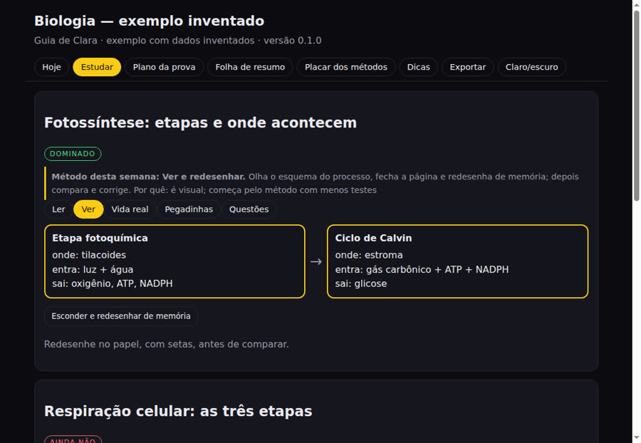
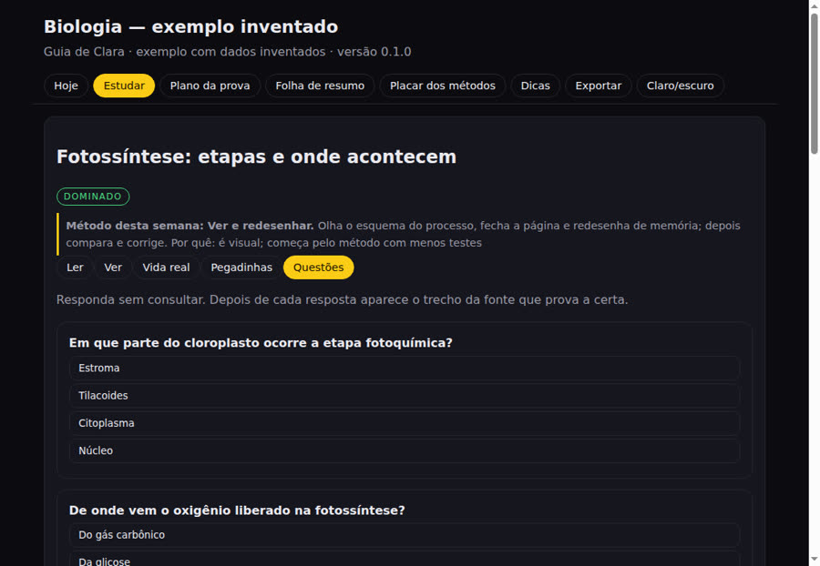
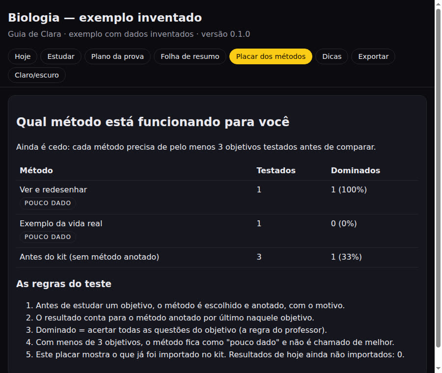

Quando o filho (ou o aluno) começa a ir mal, quem quer ajudar costuma não saber a matéria nem o jeito certo de explicar. Estudo do seu jeito é um kit grátis com uma fórmula de 8 passos. A IA ensina você primeiro e depois monta um guia de estudo no jeito do aluno, com esquemas, exemplos da vida real e questões tiradas só do material da aula. Também ajuda a testar, sem esconder nada, qual jeito de estudar funciona para ele. Para usar, basta um chat de IA. Para ir além, use o Claude Code ou o Codex.
Antes e depois da fórmula
😟 Sem a fórmula
Ele estuda do jeito de sempre: relê a apostila e grifa. A aula é um slide cheio de texto e ele aprende vendo. Você quer ajudar, mas não lembra a matéria e tem medo de ensinar errado.
Quando a IA faz um resumo, você não sabe se aquilo está certo ou se ela inventou.
😊 Com a fórmula
Primeiro você aprende o ponto em que ele errou. Depois ele estuda num guia feito para ele, com esquema para redesenhar, exemplo da vida real e questões.
Toda questão traz a frase do caderno ou do livro que prova a resposta. O que não está no material não entra.
🎯 Ajuda no ponto certo
O guia começa pelo que ele errou na prova e segue a regra do professor. Se perder uma questão faz perder o objetivo inteiro (objetivo = cada assunto que o professor cobra na prova), o guia mostra isso.
🔍 Nada inventado
A IA pode errar com confiança. Aqui cada questão é conferida no material, e resposta errada que ele anotou no caderno é apontada antes de virar estudo.
📊 O método que funciona, à vista
Redesenhar, explicar em voz alta, exemplo da vida real, fazer questões sem consultar: o kit testa um por vez e mostra o placar, sem chutar o vencedor cedo demais.
👤 Para quem
Mãe, pai, avó, tutor, professor particular. Qualquer pessoa que ajuda alguém a estudar, do ensino médio à faculdade.
⏱️ Um dia para o primeiro guia
Na história que deu origem à fórmula, a primeira versão do guia ficou pronta num dia, a partir de um pedido de quatro frases no chat.
🎁 Grátis
O kit, os pedidos prontos para o chat (nesta página) e este guia em português, inglês e espanhol.
Uma mãe que não é programadora, a cinco horas da filha
A fórmula saiu de uma história real. Trocamos os nomes.
- A filha que só tirava A começa a ir mal
Clara foi estudar biologia marinha numa faculdade a cinco horas de casa. Era muita matéria em pouco tempo, as aulas eram slides cheios de texto, e na matéria dela errar uma questão de um objetivo fazia perder o objetivo inteiro. Ela, que aprende vendo e perguntando, foi parar no D. - A mãe estuda primeiro
Lúcia tem quatro filhos e há 21 anos tem uma agência de marketing com o marido, dentro de casa. Pegou o que Clara tinha errado na prova e estudou com o Claude, duas a três horas por dia, para conseguir explicar. Clara achou que a mãe "sabia biologia". - Um guia no jeito da filha, em um dia
Lúcia é designer e sabia que Clara aprende vendo. Pediu ao Claude, em quatro frases, um guia de estudo organizado do jeito que a professora avalia, com o material das aulas. Depois pediu para virar página. No mesmo dia tinha algo para mostrar. - Toda semana, material novo e conferido
Clara fotografava o caderno depois de cada aula. O guia era refeito e conferido no livro. A IA chegou a avisar que um guia preenchido por Clara tinha respostas erradas. - O resultado
A nota subiu mais de 10 pontos: de um D (nota baixa, na escala de letras) para perto de 80 de 100. Os objetivos que Clara tinha perdido voltaram todos certos na prova seguinte. E Clara, que era contra IA, passou a vê-la como um jeito de aprender, não de cortar caminho.
Os números são da história, não foram medidos por este kit. O exemplo que vem no kit usa dados inventados e avisa isso na tela.
Os 8 passos do Estudo do seu jeito
É o que Lúcia fez, posto em ordem. O kit marca cada passo como feito ou não, a partir do que você registrou.
1. Você aprende primeiro
A IA explica o ponto em que ele errou, com exemplo e pegadinhas, e confere se você entendeu.
2. Como o professor avalia
Como a matéria é dividida e o que faz perder ponto.
3. Como ele aprende
Vendo, ouvindo e falando, com exemplo concreto ou escrevendo. Pode ser mais de um jeito.
4. O que ele já errou
A última prova diz por onde começar.
5. Planejar antes de fazer
Você conta tudo à IA, ela pergunta o que não sabe e dá opções. No fim, um resumo do plano.
6. Guia só com o material
Cada objetivo tem leitura, esquema, exemplo da vida real, pegadinhas e questões que citam a frase do material.
7. Toda semana, de novo
Fotos do caderno entram, o guia é refeito, e o que ele anotou errado é apontado.
8. Ele segue sozinho
O objetivo final é você sair do meio: ele estuda, registra e cuida do próprio guia.
Como isso muda a sua semana
📸 Depois da aula
Hoje: ele chega cansado e o caderno fica fechado até a véspera da prova.
Com a fórmula: ele manda a foto do caderno, a IA passa para texto do jeito que está escrito e o guia ganha os objetivos da semana.
🧠 Antes de explicar
Hoje: você abre o livro e não entende nada, ou pede à IA e não sabe se ela inventou.
Com a fórmula: a IA explica a partir do material dele, com exemplo do dia a dia, e diz "o material não fala disso" quando é o caso.
✏️ Na hora de estudar
Hoje: reler a apostila de novo.
Com a fórmula: ele marca só o que precisa hoje, olha o esquema, esconde e redesenha de memória, depois faz as questões sem consultar.
📅 Uma semana antes da prova
Hoje: tudo na última noite.
Com a fórmula: um plano dia a dia, primeiro o que ele errou, e no último dia só questões. A folha de resumo vai impressa no bolso.
Uma página que ele abre no celular
O kit gera o guia como uma página só, que funciona sem internet. Abaixo, o exemplo com dados inventados (a página do exemplo está em português).

Ver e redesenhar. O esquema some e ele desenha de memória.

Questões sem consultar. Depois de responder, aparece a frase do material que prova a certa.

Placar dos métodos. Com menos de 3 objetivos testados, aparece "pouco dado".
🗂️ Ele escolhe o que estudar hoje
Marca os objetivos e alterna entre ler, ver, vida real, pegadinhas e questões.
🖨️ Folha de resumo
Em preto e branco, só com o que ele marcou: tudo, só esquemas ou só questões.
Quem escreve, quem confere, sem jargão
✍️ A IA escreve
A IA do chat, o Claude Code ou o Codex lê as fotos e escreve as explicações e as questões. É a parte em que a IA é boa.
🔎 O kit confere
Como o professor que pede "mostre onde está no livro": cada questão tem de trazer a frase do material. O kit procura a frase e, se ela não existe, a questão não entra.
📒 O caderno de bordo
Antes de estudar, fica anotado qual método ele vai usar e por quê. Depois, o resultado. Nada é apagado, então dá para ver o caminho todo.
🧪 O teste dos métodos, às claras
Ninguém sabe de antemão qual jeito de estudar funciona para ele. O kit alterna os métodos que combinam com o jeito dele e também usa o "reler e grifar" de sempre, para comparar. Só chama um método de "na frente" quando há pelo menos 3 objetivos testados em cada um e uma diferença clara. Antes disso, diz "pouco dado".
⚠️ O que o kit não promete
- Não promete nota: é uma ajuda para estudar melhor.
- Confere se a frase está no material, mas não se o material está certo. Por isso o livro entra como fonte.
- O placar é uma pista honesta, não um experimento científico: objetivos diferentes têm dificuldades diferentes.
Do chat ao seu Jarvis
💬 Só o chat
Pedidos prontos para colar em qualquer IA: planejar, você aprender primeiro, passar o caderno para texto, conferir o que ele preencheu (estão logo abaixo).
📱 O app do aluno
A página do guia, no celular ou no computador, sem internet. Quem gera a página é o Claude Code ou o Codex, com o kit.
🤖 Claude Code ou Codex
O agente faz o trabalho da semana seguindo a fórmula, e o kit confere tudo.
🧠 No seu Jarvis
Quem já usa o assistente ARCKHÉ (INTELECTO) liga o kit, e o aluno pergunta pelo Telegram: "qual método está funcionando?"
Comece pelo plano, não pelo guia
É onde as coisas costumam dar errado: quem pula o plano refaz tudo depois.
1. Abra a sua IA
O chat do Claude (ou de outra IA) já serve. Se usa o Claude Code ou o Codex, abra numa pasta qualquer.
2. Cole o pedido e anexe o material
Fotos do caderno, o guia do professor, a prova corrigida.
3. Responda as perguntas dela
Ela pergunta o que não sabe e dá opções. Você escolhe, e só então ela monta.
Quero montar um guia de estudo para [quem], que está em [matéria e nível]. Vou anexar o material: anotações, guia do professor, a última prova. 1. Ainda não construa nada. Primeiro me pergunte o que você precisa saber: como o professor avalia, como [quem] aprende, o que errou. 2. Me dê 2 ou 3 opções de como organizar o guia, com o lado bom e o ruim de cada uma. 3. Regra fixa: todo conteúdo e toda questão saem só do material que eu mandar, com a frase que prova a resposta. Se faltar, me pergunte. 4. Quando eu escolher, me mostre um resumo do plano e espere o meu sim.
Funciona em qualquer chat de IA. Se você usa o Claude Code ou o Codex (versões que trabalham com arquivos no seu computador), acrescente no começo: "Leia o kit em https://github.com/linnoff88-dev/estudo-do-seu-jeito e siga a fórmula". Assim ela usa a conferência automática do kit.
🛠️ É técnico e quer instalar à mão?
Os comandos, o formato dos arquivos, a skill do Claude Code, o plugin do Jarvis e os testes estão no README do GitHub.
Os pedidos para cada passo, prontos para colar
Troque o que está entre [colchetes] e anexe o material no chat. Todos mandam a IA usar só o que você mandar.
🧠 Você aprende primeiro (passo 1)
Antes de explicar um assunto que você não domina. Anexe o material daquele assunto.
Vou ensinar [assunto, ex.: respiração celular] para [nome], que aprende [jeito, ex.: vendo e com exemplo da vida real]. Use só o material anexado. 1. Me explique como se eu fosse leigo, em passos curtos, na ordem em que as coisas acontecem. 2. Me dê um exemplo da vida real para cada passo. 3. Me diga as 3 pegadinhas mais prováveis na prova, cada uma com a frase do material que mostra a certa. 4. Me faça 3 perguntas para ver se eu entendi, uma de cada vez, e corrija com a frase do material. 5. Se o material não disser alguma coisa, fale "o material não diz" em vez de completar.
📸 Passar o caderno para texto (passo 7)
Para cada foto das anotações. O texto que sai vira o material da semana.
Transcreva o texto desta foto exatamente como está, em texto simples. Não corrija o conteúdo, não complete frases e não acrescente nada. Onde não der para ler, escreva [ilegível]. Desenho ou esquema: descreva em uma linha entre colchetes, ex.: [esquema: glicose → piruvato, com seta].
📝 Guia da semana (passo 6)
Depois de passar o caderno para texto, no mesmo chat.
Com base só no texto das anotações acima, monte o guia desta semana para [nome], que aprende [jeito]. Para cada objetivo da aula: uma explicação curta, as etapas em esquema (nome, onde acontece, o que entra, o que sai), um exemplo da vida real, as pegadinhas e 3 questões de múltipla escolha. Em cada questão, copie a frase do material que prova a resposta. Deixe as opções com tamanho parecido e a certa em posições variadas. Se o material for pouco, faça menos questões; não invente.
🔍 Conferir o que ele preencheu (passo 7)
Antes de usar como estudo um guia ou lista que ele respondeu à mão.
Este é um guia de estudo que [nome] preencheu (foto anexa) e este é o material da aula (anexo). Antes de usarmos isso para estudar, compare cada resposta com o material. Para cada uma que não bater, mostre: a pergunta, a resposta dada, o que o material diz (com a frase) e me pergunte o que fazer. Não corrija sozinho e não use nada fora do material.
Para o resumo do plano, o placar dos métodos e o app do aluno, use o Claude Code ou o Codex com o kit (veja o README no GitHub).
Testamos: a questão inventada não entrou
No exemplo de biologia, mandamos duas questões novas sobre respiração celular. Uma estava certa. A outra dizia que a glicólise produz 38 moléculas de ATP, e o material não diz isso.
- A questão certa trazia a frase do caderno:
"Glicólise: ocorre no citoplasma". - A inventada citava uma frase que não existe no material.
O kit procurou e não achou. - Nada foi gravado.
O kit recusou o arquivo inteiro e disse qual questão corrigir. - Depois, um guia preenchido com "estroma" onde o certo era "tilacoides".
O kit apontou a resposta, mostrou a frase do material e avisou para não usar aquilo como estudo sem corrigir.
"ERRO respiracao-2/x2: o trecho não existe em respiracao.txt. Copie o trecho exato da fonte ou tire a questão"
"Nada foi gravado: 1 erro(s). Corrija o arquivo e rode de novo."
Saída real do kit em 20/11/2026, no exemplo com dados inventados. O kit tem 42 testes automáticos.
Antes de você começar
Preciso saber programar?
Não. A mãe da história não programa. O chat e os pedidos prontos bastam. O Claude Code entra quando você quer as partes interativas e a conferência automática.
Eu não sei a matéria. Dá certo?
É para isso que existe o passo 1: a IA ensina você antes, a partir do material dele, e confere se você entendeu.
Não é colar?
Não. O guia ensina e testa. As questões são para treinar sem consultar, e o objetivo final é ele estudar sozinho.
Serve para qualquer matéria?
Serve para matéria que tem material escrito: anotações, apostila, livro. O exemplo é biologia, mas a fórmula é a mesma para química, história ou direito.
Quanto custa?
O kit é grátis. Você precisa de uma IA: o chat gratuito já começa. Na história, a mãe passou depois para o Claude Code, que é pago.
Que nomes são esses?
Claude Code e Codex: versões do Claude e do ChatGPT que trabalham com arquivos no seu computador. GitHub: o site onde o kit fica guardado, de graça. README: o manual do kit, nesse site. INTELECTO ou Jarvis: o assistente pessoal grátis do ARCKHÉ. Só com o chat você já usa a fórmula.
E os dados dele?
Ficam no seu computador, numa pasta só sua. Nada vai para o GitHub.
E você: em que matéria você gostaria de ajudar alguém, se soubesse por onde começar? Grátis no ARCKHÉ AI, direto na internet.